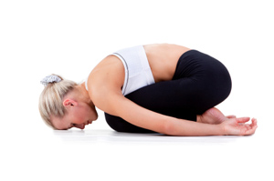
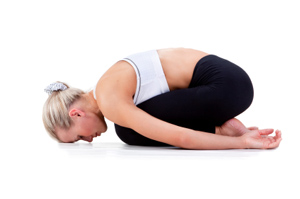

My Daily Workout: Yoga
Downward-Facing Dog: Step-by-Step Instructions!
Child's Pose Step-by-Step Instruction
- Kneel on the floor. Touch your big toes together and sit on your heels, then separate your knees about as wide as your hips.
- Exhale and lay your torso down between your thighs. Broaden your sacrum across the back of your pelvis and narrow your hip points toward the navel, so that they nestle down onto the inner thighs. Lengthen your tailbone away from the back of the pelvis while you lift the base of your skull away from the back of your neck.
- Lay your hands on the floor alongside your torso, palms up, and release the fronts of your shoulders toward the floor. Feel how the weight of the front shoulders pulls the shoulder blades wide across your back
- Balasana is a resting pose. Stay anywhere from 30 seconds to a few minutes. Beginners can also use Balasana to get a taste of a deep forward bend, where the torso rests on the thighs. Stay in the pose from 1 to 3 minutes. To come up, first lengthen the front torso, and then with an inhalation lift from the tailbone as it presses down and into the pelvis.
 
